Exploring the Power of Flow Models
CS280A Project 3 · Part A
Benny ChenYu Wan
The experiments use 512 × 512 RGB images normalized to [−1, 1]. Time runs from noise at t = 0 to a clean image at t = 1. Euler sampling uses step size 0.02; guided experiments use CFG weight 7.
1.1 Constructing Noisy Training Inputs
I used my photograph of a Chinese wooden pagoda throughout Sections 1.1–1.5. I sampled one Gaussian noise tensor and reused it at all three times, so the comparison changes only the interpolation weight.
x_t = (1 - t) * epsilon + t * image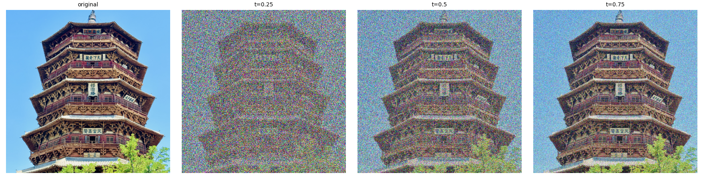
At smaller t, noise obscures the roof details and the sky. As t increases, more of the original architecture becomes visible. The endpoint checks return noise at t = 0 and the original image at t = 1.
1.2 Classical Denoising
I first divided each noisy input by t to restore the image amplitude, then applied Gaussian blur. I tried σ = 1, 2, 4, 8, and 16 and selected the lowest mean squared error (MSE) against the known original for each time.
estimate = gaussian_blur(x_t / t)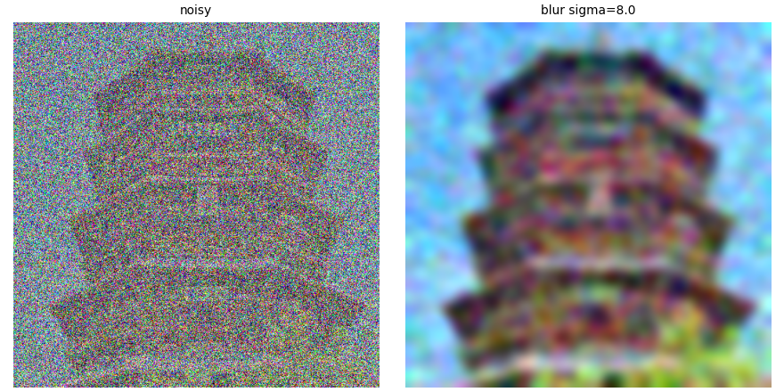
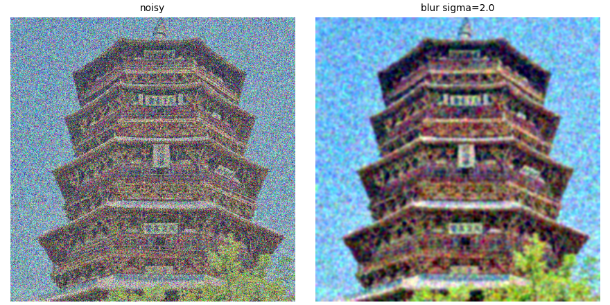
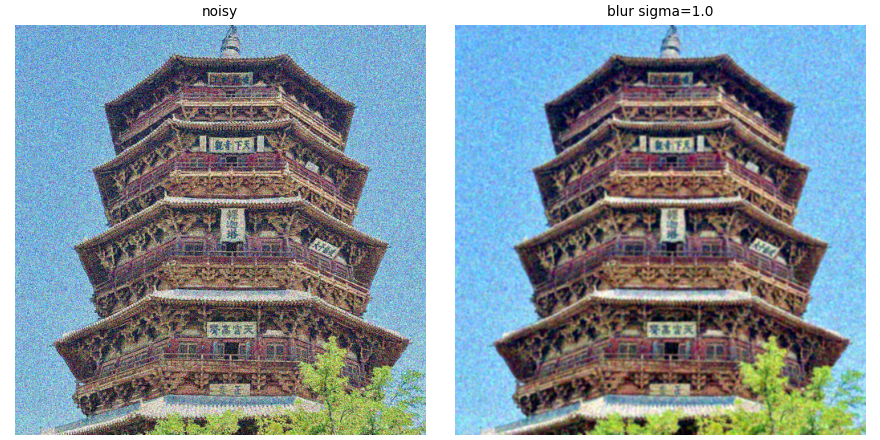
1.3 One-Step Denoising
Using the prompt “a high quality photo,” I predicted the velocity once and extrapolated over the remaining time. The model predicts velocity rather than noise, so the update is added to the input.
estimate = x_t + (1 - t) * predict_velocity(x_t, t, condition)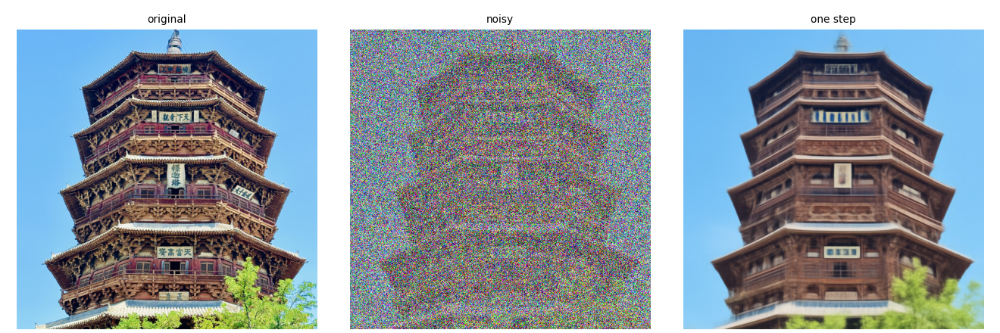
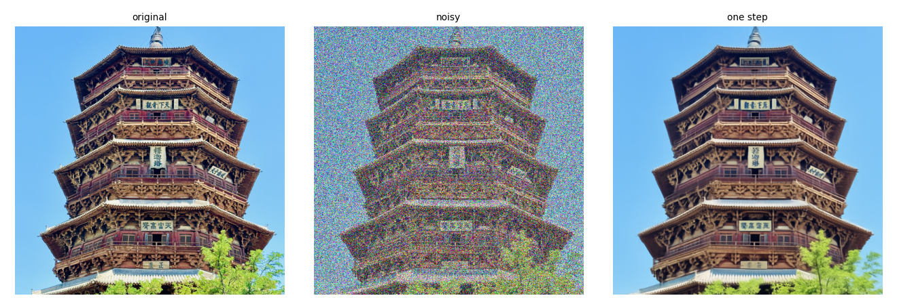
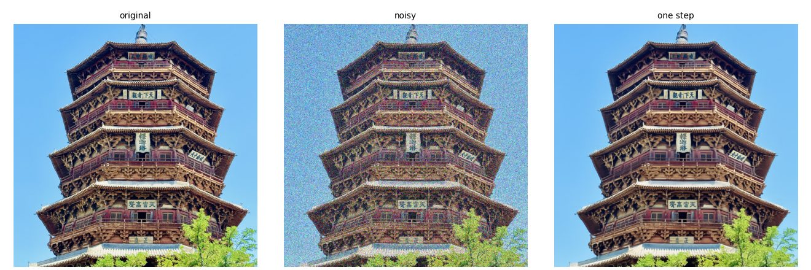
1.4 Visualizing Velocity
I compared the predicted update with the exact update needed to recover the original. The error map is the root-mean-square difference across RGB at each pixel, calculated before display scaling. All update images share a symmetric scale with zero at middle gray, and all error maps share their limits.
predicted_update = (1 - t) * predicted_velocity
target_update = (1 - t) * (image - epsilon)
error = ((predicted_update - target_update)**2).mean(dim=1).sqrt()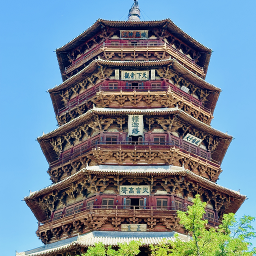
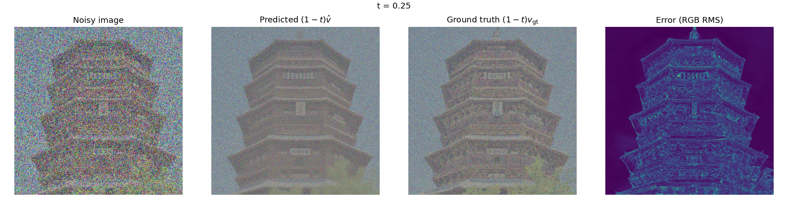
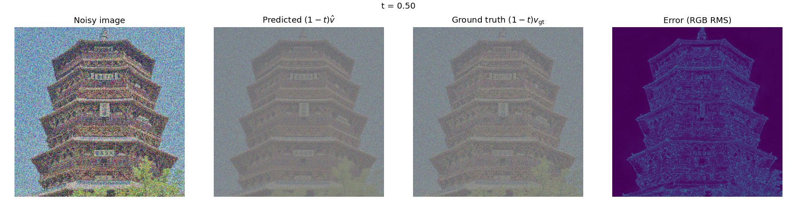
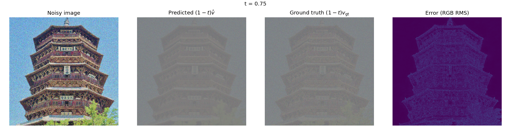
1.5 Iterative Denoising with Euler Sampling
Starting from the saved t = 0.50 input, I took 25 Euler steps and recomputed the velocity after every update. The final step is shortened when necessary to end exactly at t = 1. The sampler passed constant-velocity checks for 50 steps, 25 steps, and a shortened final step.
x_next = x + (next_t - t) * velocity(x, t)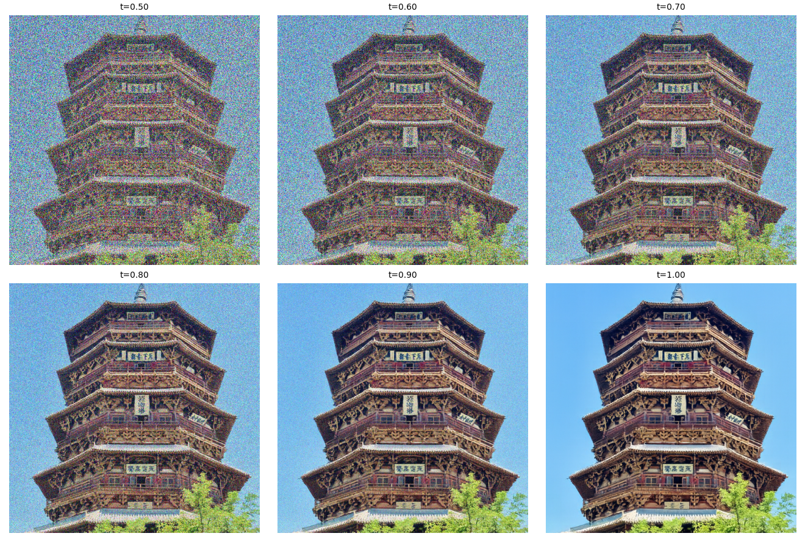
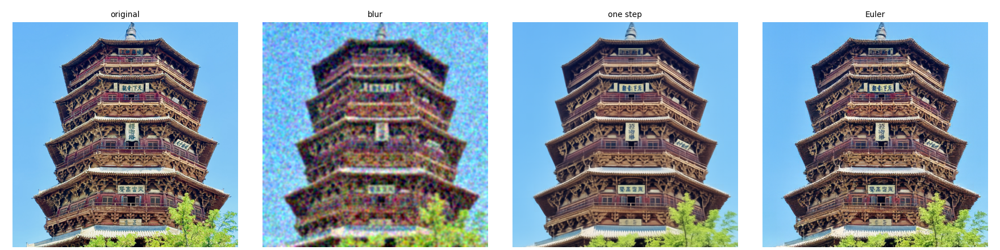
| Method | MSE |
|---|---|
| Gaussian blur | 0.060014 |
| One step | 0.026428 |
| Euler | 0.032403 |
Both model-based methods recover a cleaner image than blur. Euler produces textured architectural details, while the one-step output is smoother.
1.6 Generating Images from Noise
I started from independent Gaussian noise at t = 0 and ran 50 Euler updates with “a high quality photo,” without extra CFG. The five seeds are 180–184.

All five outputs are portraits despite the generic prompt. Quality varies: some faces are coherent, while the first sample loses facial features and another has a rough, painterly appearance.
2.1 Classifier-Free Guidance
I evaluated the conditional and empty-prompt velocities at the same image and time, then combined them using the assignment’s CFG convention. The w = 0 check reproduces ordinary conditional prediction.
v_cfg = v_cond + 7 * (v_cond - v_uncond)Each row below uses exactly the same initial noise with and without guidance. Both use “a high quality photo.”

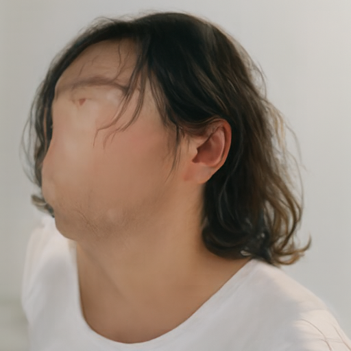


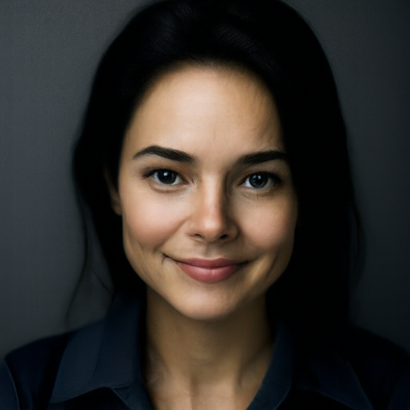


CFG gives more coherent facial features and cleaner portrait lighting in these samples.
3.1 Image-to-Image Editing
I mixed each source image with noise at starting times 0.02, 0.04, 0.06, 0.10, 0.14, 0.25, and 0.50, then sampled to t = 1 using CFG and “a high quality photo.” The same seed (180) is reused across times. Smaller starting times allow larger changes; larger times retain more of the original.
x_start = (1 - t_start) * epsilon + t_start * image
result = Euler(x_start, t_start, CFG_velocity)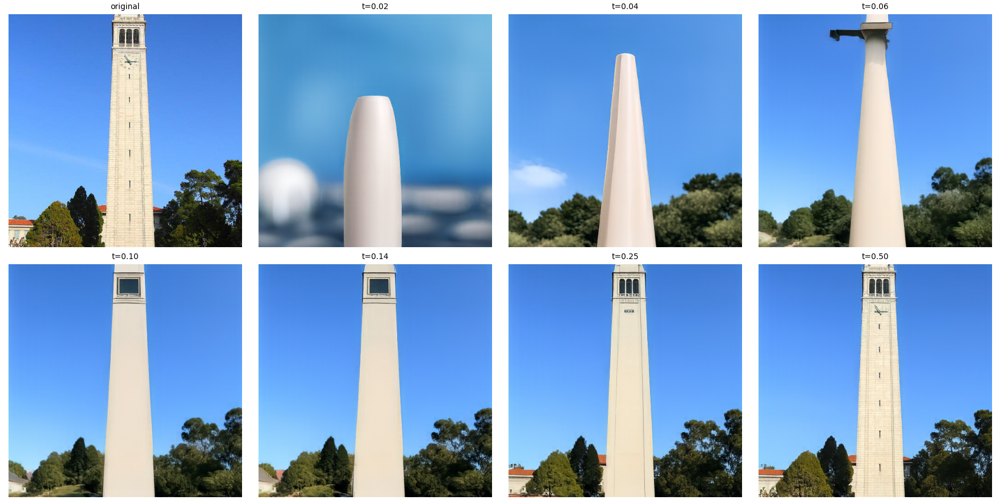
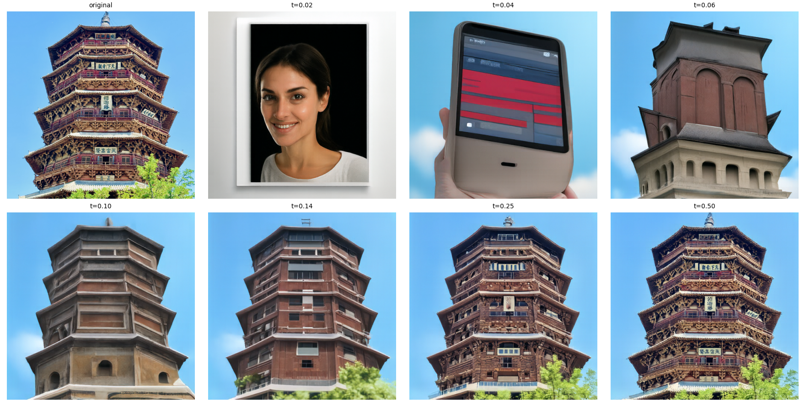
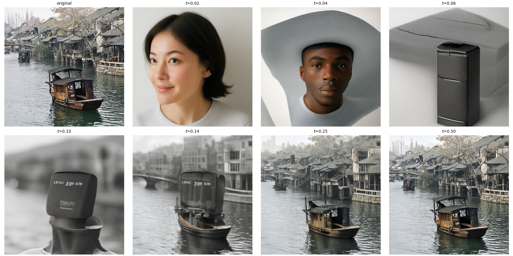
Web image and hand-drawn inputs
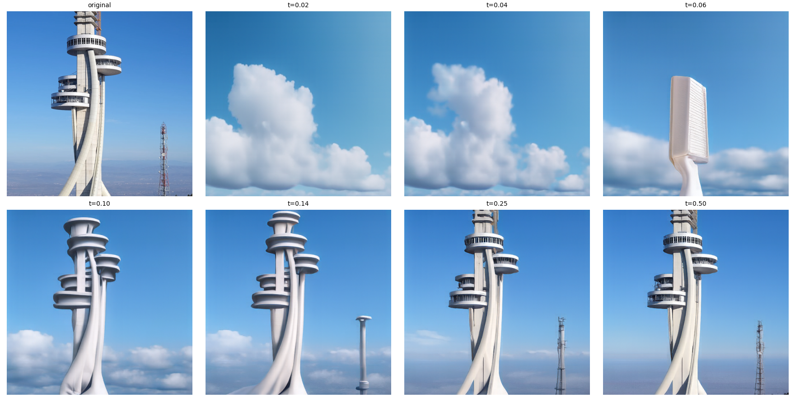
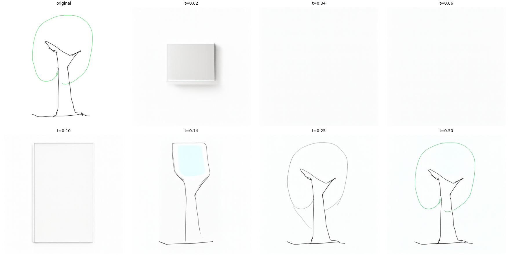
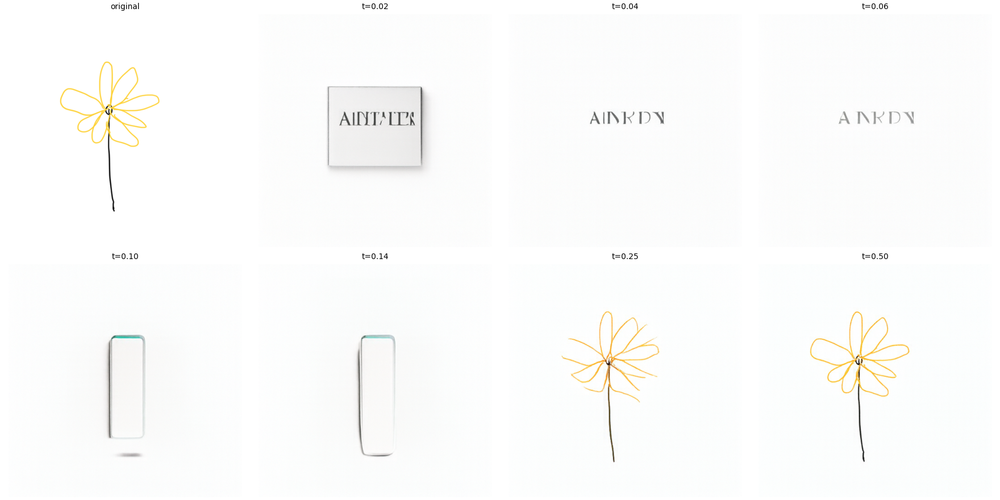
The web tower becomes clouds or unrelated shapes at low starting times, then regains its silhouette as t increases. The sparse drawings are harder to turn into photographs: might because my drawing is too abstract.
3.2 Text-Guided Image Editing
I reused the same three photographs and seven starting times, changing only the conditional prompt to describe a new subject.
Campanile → rocket
Prompt: “a photograph of a rocket on a launch pad”
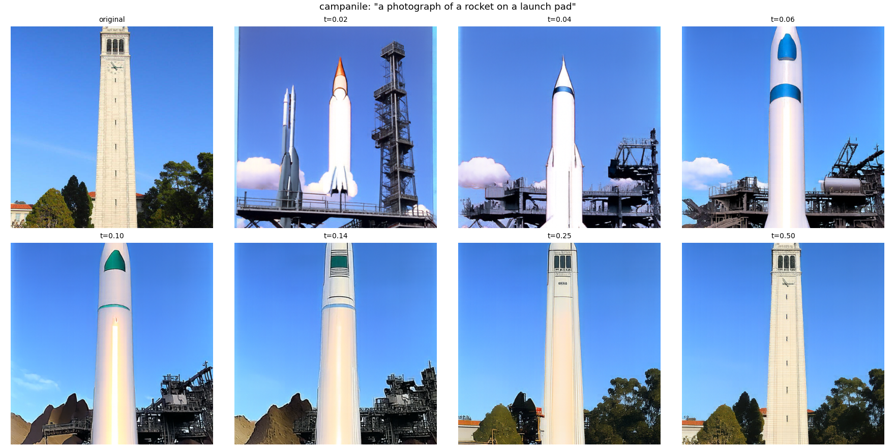
Wooden pagoda → castle
Prompt: “photograph of a medieval castle covered in ivy”
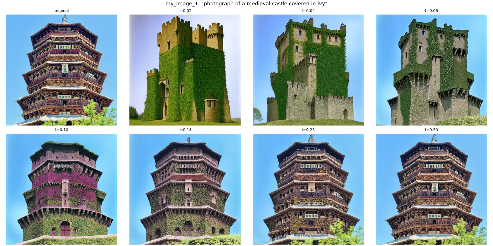
Canal boat → glass flower
Prompt: “a photograph of a flower sculpted from colorful glass”
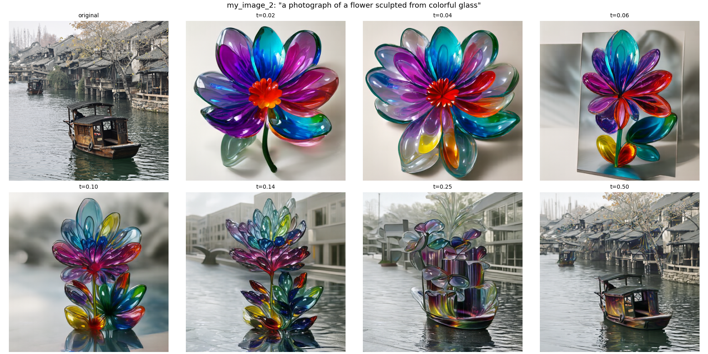
The pagoda becomes an ivy-covered stone castle at low times. Around t = 0.10–0.14 it mixes the pagoda’s tiered shape with castle surfaces, and at t = 0.50 it stays close to the source. The boat example deliberately uses an unrelated flower prompt: low times produce a glass flower, middle times place glass forms on the water, and high times preserve the boat with smaller material changes.
3.3 Visual Anagrams
I predicted one CFG velocity for the upright image and another for the image rotated 180°. After rotating the second velocity back, I averaged both and used the result in each Euler step.
v = (guided(x, t, prompt_a)
+ rotate180(guided(rotate180(x), t, prompt_b))) / 2

The first illusion uses warm highlights for both the man’s face and the fire. In the second, mountain and village outlines become a horse after rotation. Details from the alternate interpretation remain visible, so neither view is completely independent.
3.4 Hybrid Images
I combined the low frequencies of one CFG velocity with the high frequencies of another. The Gaussian low-pass filter uses σ = 16 and kernel size 265 at 512 × 512. The resulting velocity drives the same Euler sampler.
v = lowpass(v_distant) + v_close - lowpass(v_close)Waterfall / skull
Close prompt: “a lithograph of a waterfall”. Distant prompt: “a lithograph of a skull”.

Forest / cat
Close prompt: “a lithograph of a forest”. Distant prompt: “a lithograph of a cat”.

The waterfall and forest details are clear up close. The intended distant subjects are weaker: the first has a rounded head-like outline, while the second has a face-like arrangement of trees but does not read as an unambiguous cat. Combining frequencies does not guarantee equally recognizable subjects.
Bells & Whistles
I adapted the parallel denoising idea from Visual Anagrams: transform the current image, predict in each view, inverse-transform the second prediction, and average. Here the predictions are flow velocities rather than diffusion noise. I tested two additional transformations.
v = (guided(x, t, prompt_a)
+ inverse(guided(transform(x), t, prompt_b))) / 290° rotation
The forward transform rotates 90° counterclockwise; the inverse rotates 90° clockwise. I checked that composing them restores the original tensor.
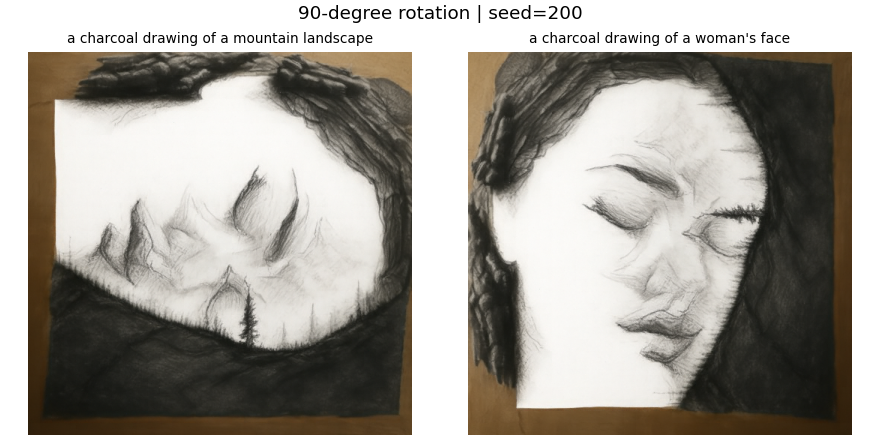
The mountain ridges become facial features after rotation, while the dark landscape boundary becomes hair. Both subjects are recognizable, although traces of the alternate view remain.
Color inversion
For tensors in [−1, 1], color inversion is simply −x, and it is its own inverse. I apply the same negation to align the velocity. Rotation and negation are linear orthogonal transformations that preserve standard Gaussian noise statistics.

Bright snow turns into dark facial cavities after inversion, revealing the skull’s eye sockets, nose, and teeth. The mountain view still contains traces of the skull shape.
Course logo
I drew a camera with a clock tower inside the lens, then used text-guided editing with seed 220 at t = 0.10, 0.25, and 0.50.
Prompt: “a clean logo for a Berkeley computer vision course, a camera aperture surrounding the Campanile tower, navy blue and golden yellow, simple bold geometric shapes, white background, no text”
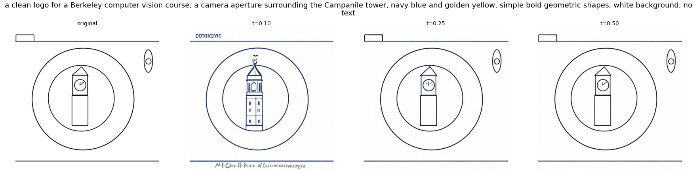
At t = 0.10 the model adds more tower detail, but also introduces unwanted text-like marks despite the prompt. Larger starting times preserve the simple drawing. The requested gold color is not clearly realized; this experiment is more successful at preserving the emblem structure than following every style instruction.
Settings and References
Model: MCG-NJU/PixNerd-XXL-P16-T2I. Experiments ran in float32 on a Tesla T4, with seed 180 unless otherwise labeled, Euler step size 0.02, and CFG weight 7. View saved experiment metrics.